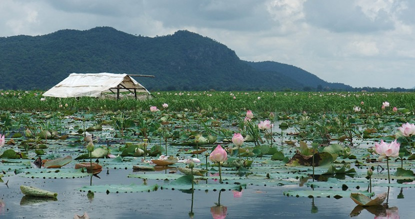
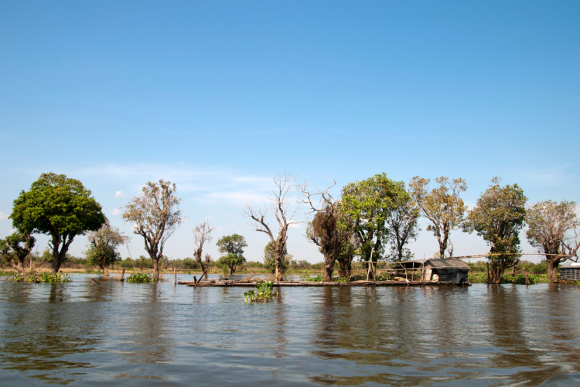
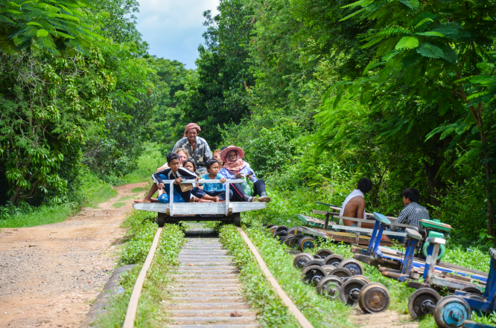
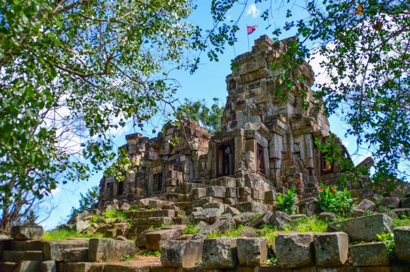
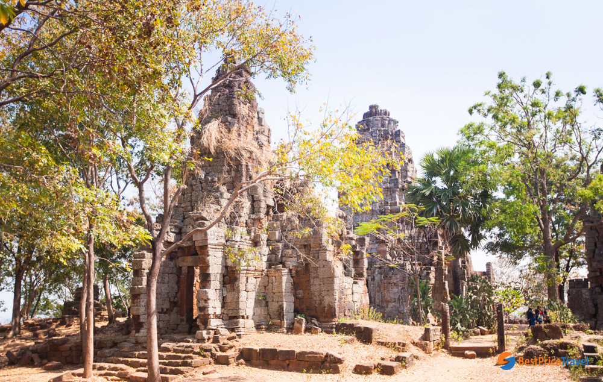

Battambang literally means 'loss of staff' in Khmer, referring to the local legend of Preah Bat Dambang Kranhoung. Stone inscriptions discovered from pre-Angkorian and Angkorian eras have as yet not mentioned any contemporary villages or districts called "Battambang", but according to the document Mohachun Khmer, Srok Battambang (Battambang District) was used during the Angkor and post-Angkor eras. In Thai, the province is called Phra Tabong.
Countryside Tour, Sightseeing Tour, Adventure Tour, Things to do in Battambang Cambodia. Mr Rich offer scenic excursions in and around the Battambang Province. Rich is an English-speaking and professional driver.he would love to show you this beautiful country. Come, see, meet, greet and eat with the local Khmer people.he’s very friendly and would love to meet you soon. Please call Rich today. Local experienced driver knows all of the local and other attractions.he specialize in country, scenic tours away from the city life.he specialize in rural counryside tours and special attractions like the Bamboo train.he also do tours for Phnom Sam Pov, Ancient temples, Kam Ping Puoy Reservoir (Killing Dam Lake). Rich Tuk Tuk Tours is the Khmer who cares.he have provided custom Tuk Tuk tours for many years in the Battambang Province within Cambodia. Please contact him. so he can help an experience . He guarantee smiles & promise complete customer satisfaction..
There's something about Battambang (បាត់ដំបង) that visitors just love. Forget the fact that there's really not all that much to do in the city proper: the colonial architecture teetering into genteel disrepair, the riverside setting, the laid-back cafes – they all make up for it. It's the perfect blend of relatively urban modernity and small-town friendliness.Outside the city's confines, meanwhile, timeless hilltop temples and bucolic villages await. Not to mention the most scenic river trip in the country, which links Battambang with Siem Reap.That Cambodia's best-known circus (the magnificent Phare Ponleu Selpak) is here is no coincidence: the city has an enduring tradition of producing many of Cambodia’s best-loved singers, actors and artists.
The Kamping Poy lake was created by the Khmer Rouge using slave labour to build. Over 10,000 Cambodians died due to excessive labor and poor health during the construction of the dam, which was aimed to improve irrigations to the rice paddies. As a result, it is called “killing dam”. Ironically, the reservoir which is still being used nowadays has become people's picnic spot.
Battambang city is built along the Sangker river. Because Sangker river and Tonle Sap Lake is connected, visitors can travel back and forth between Siem Reap and Battambang by boat through this beautiful waterway. On the both sides of the river, there are protected Wetlands and narrow bays, and the middle is the floating village of people who live with traditional mediocre lifestyle. August 1 is the deep water period, and taking a yacht back and forth is available, only 4 hours between Siem Reap and Battambang. Shallow water period, only the small boat is available, and the traveling period is yacht’s twice.
Enjoy a unique experience on the “Bamboo Train” in the middle of the lush countryside.The Bamboo Train (unique in Cambodia and it’s at Battambang !) is a small motorized platform that follows in a few miles the narrow gauge railroad linking Phnom Penh to Battambang.We invite you to sit and explore the countryside of Battambang which, thanks to its fertile soil, is the first “rice granary” of the country. Plantations surrounded by palm trees, Zebu pulling plows, farmers leant on the farming are an integral part of the Cambodian countryside. (Caution:it is a means of local transportation very easy and very less comfortable).Duration : 1hour.Price: 5$/pax.
Watt Ek Phnom, a modern pagoda, sits next to some 11th century Angkorian ruins built as Hindu temples under Suryavarm I. The river road drive to Ek Phnom from Battambang passes through some absolutely beautiful countryside.
The 11th century mountaintop Angkorian ruin of Phnom Banan is the best preserved of the Khmer temples around Battambang. As you approach you will see the distinctive five towers pointing skyward, like a smaller version of Angkor Wat. At the base of the mountain you are faced with a steep laterite staircase flanked by nagas. After climbing the 350+ steps you are treated to a wonderfully peaceful setting. The temple was built by Udayadityavarman II, son of Suryavarman I, and despite some looting it is in a considerably better state of repair that Wat Ek Phnom. Several delightfully carved lintels remain above some of the towers doorways, others are now housed in the Battambang Museum. From the mountaintop are superb views across the surrounding countryside, with small villages dotting the endless rice paddies which are punctuated with the characteristic sugar palm trees. To the south you will see Crocodile Mountain, and to the north west Phnom Sampeau.Just over 20km to the south of Battambang, Phnom Banan is the best kept of the remaining Khmer ruins in the area, though again, when compared to Angkor Wat it isn't so impressive.